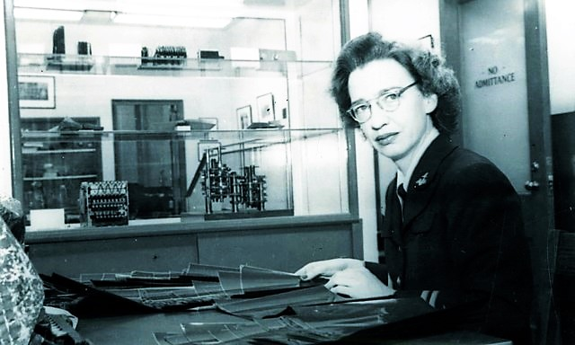

Термины
- Баг (Bug)
- 9 сентября 1947 года команда Хоппер извлекла из электромеханического реле компьютера Mark II застрявшую ночную мотыльку. Они вклеили насекомое в технический журнал с надписью: «First actual case of bug being found» (первый реальный случай обнаружения жучка). Хотя слово использовали и раньше, этот случай закрепил термин в IT.
- Отладка (Debugging)
- процесс поиска и устранения ошибок в коде.
- Хоппер активно ввела этот термин в обиход для описания работы по очистке программ от сбоев.
- Компилятор (Compiler)
- рограмма, которая переводит человекочитаемый исходный код на языках высокого уровня в машинный код.
- Хоппер разработала самый первый в истории рабочий компилятор A-0 в начале 1950-х годов, доказав, что компьютер можно заставить понимать привычные математические и языковые конструкции.
- FLOW-MATIC и COBOL
- ключевые вехи в создании языков программирования, понятных человеку.
- Хоппер участвовала в разработке FLOW-MATIC (первого коммерческого языка с англоязычным синтаксисом) и стояла у истоков создания легендарного универсального языка COBOL.